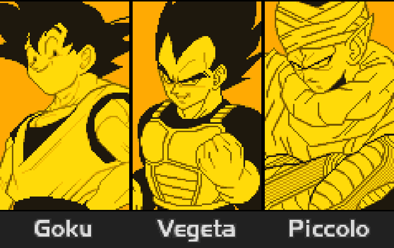
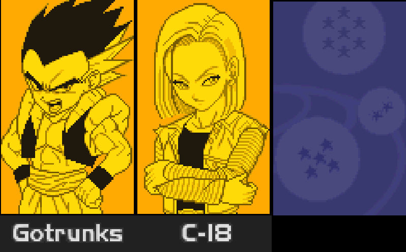
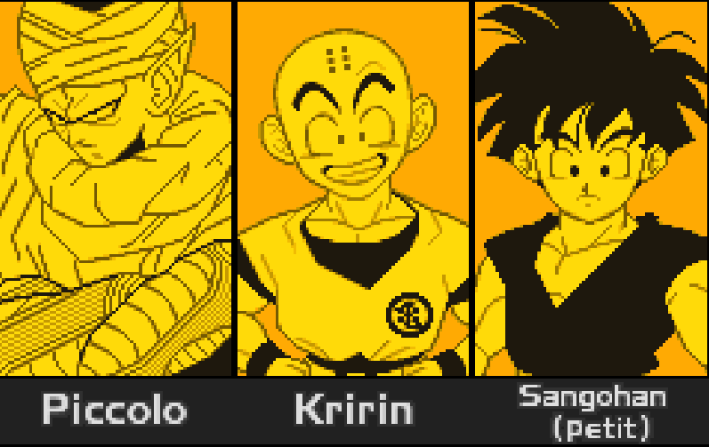
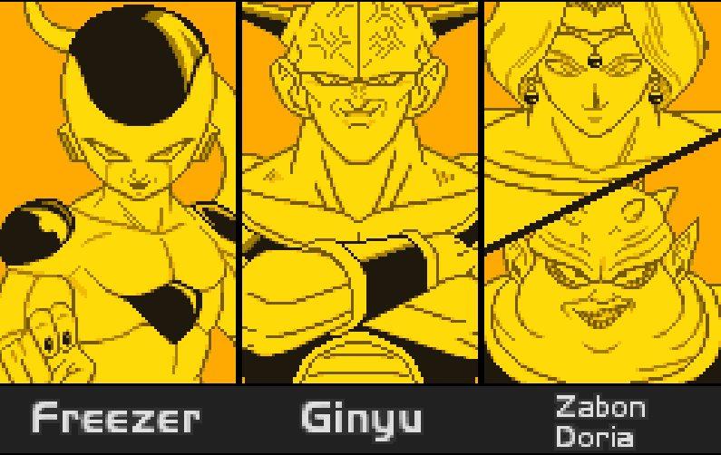

Introduction
Le mode Combat Z est un mode où on affronte des combattants contrôlés par l'ordinateur du jeu. Le but est de tous les vaincre et on a à la clé de ce mode de jeu, une augmentation de Dp et surtout l'accès au terrible Mode Maximum
l'objectif sera de montrer comment vaincre ce mode avec les différentes équipes possibles à disposition des joueurs débutants et expérimentés.
Comment fonctionne le Mode Combat Z ?
Ce mode fonctionne de la manière suivante:
Les équipes pour réussir
On partira du principe qu'on est au début du jeu, donc que l'on possède au maximum 7 Dp pour créer une team, quand bien même on aurait fini le Mode Histoire. Autrement avec plus que 7 DP, ce Mode sera plus une formalité qu'autre chose.
Il y aura plusieurs équipes et cela sera divisé en 2 catégories
Liste d'équipes n°1: Avant le Mode Histoire
La toute première équipe est composée de Goku, Vegeta et Piccolo.
La raison du choix de l'équipe se repose sur plusieurs choses:
La stratégie a adopé avec cette équipe est la suivant:
Jouez Goku pour commencer, ses attaques sont simples, puissantes et couvrent la longue portée avec le Kamehameha, la moyenne portée avec le Dragon Shot et la courte portée via le corps-à-corps. Egalement sa compétence "Kaioken" permet de frapper plus fort, ce qui permet de faire des dégâts considérables à des personnages à 4 ou 5 DP.
Vous pourrez ensuite jouez Vegeta quand l'adversaire sera assez affaibli, Vegeta sera plus dans la finition et le combat rapproché via ses coups spéciaux comme son attaque spéciale haute qui est parfaite au corps-à-corps. Son Garlick Gun et son attaque spéciale basse sont biens respectivement pour affaiblir les PV de l'adversaire et empêcher l'adversaire de trop bouger. Sa compétence "Conscience rivale" est plutôt intéressante dans le cas de figure où il est un personnage à 3 Dp seulement, ce qui permet que dans les niveaux entrent 6 et 8, vous pourrez l'enclencher et frapper plus fort.
Enfin Piccolo qui sera là en tant que "tank" grâce à sa régénération, sa compétence qui est vraiment excellente car il peut taper l'adversaire correctement avec ses spéciaux qui sont tous biens, pour la longue portée via le Makankosappo, la courte portée avec le Gekiretsukoudan et la moyenne portée qui en plus est à tête chercheuse, le Makankuuhouidan.
En règle générale, vous pourrez jouer normalement, sans avoir à adopter de stratégie, mais lorsque l'adversaire en face sera trop puissant, faites en sorte de garder vos 3 personnages, puis de l'affaiblir à environ 60% de sa vie, grâce à du corps-à-corps en utilisant Goku ou Vegeta, puis de lui envoyer une attaque en trio, ce qui permettra de compenser la différence de puissance.

L'équipe n°2 se compose des personnages suivants: Gotenks et C-18
Les raisons pour cette équipe sont :
Pour la stratégie a adopté, passons en revue les qualités des personnages et voyons ce que l'on peut faire avec :
Gotenks sera la force de frappe majeure de l'équipe, il a un arsenal parfait pour affronter les autres personnages:
Il a des attaques spéciales qui peuvent faire plusieurs choses intéressantes et couvrent toutes les portées: Son Canon V couvre la longue portait et fait d'excellents dégâts
, son beignet galactique est une charge vers l'adversaire, ce qui brise la garde et fait des dégâts intéressants et enfin son Fantôme Kamikaze qui couvre la moyenne et courte distance, fait de très bons dégâts et le fantôme peut poursuivre l'adversaire.
Egalement il peut devenir Super Saiyan pour augmenter son attaque, ce qui permet de frapper bien plus fort ses ennemis.
C-18 est selon moi le personnage le plus fort à 2 DP lorsque que l'on commence le jeu, elle a des attaques spéciales intéressantes et surtout une excellente capacité qui permet de garder son énergie à 100 durant une bonne durée du combat, ce qui permet d'enchaîner les attaques spéciales sans faire trop attention à son énergie. Pour ses attaques spéciales, elle sera spécialisée dans le combat rapproché via son attaque spéciale standart, qui malgré sa faible portée frappe fort. Elle sera aussi forte pour gênée l'adversaire avec ses deux attaques spéciales hautes et basses qui malgré leurs dégâts moyens, empêcheront l'adversaire de se rapprocher , d'ailleurs ces attaques spéciales sont des excellents moyens pour gérer la longue portée quand l'adversaire est en dessous ou au dessus, ce qui permet de le garder loin.
Pour cette équipe, la stratégie sera bien plus tournée autour de Gotenks, en début de partie, essayez de jouer aggressif en utilisant la puissance de Gotenks jusqu'à que la plupart des ennemis tombent. Si Gotenks ne tape pas suffisamment fort, transformez le en Super Saiyan, puis n'hésitez pas à user du Fantôme Kamikaze qui est vraiment redoutable. Pour que C-18 soit utilisée efficacement, chargez avec Gotenks votre ki à 200, puis échanger avec C-18, mettez un coup envoyant l'ennemi plus loin. Après avoir activée votre compétence, vous pouvez enchaîner les spéciaux ou même les attaques énergétiques afin de briser la garde de l'ennemi et de simplement le vaincre sur la durée.

On poursuit avec l'équipe n°3 où il y aura: Piccolo, Krilin et Gohan
Les raisons pour cette équipe sont :
Pour la stratégie a adopté, passons en revue les qualités des personnages et voyons ce que l'on peut faire avec :
Contrairement à l'équipe n°1, Piccolo sera ici la force de frappe majeure de l'équipe, il a toujours un arsenal complet pour pouvoir affronter les autres personnages:
Il a son Makankosappo qui couvre la longue portait et fait de bons dégâts, son Gekiretsukoudan qui est parfait pour couvrir la courte portée tout en faisant de bons dégâts et enfin son Makankuuhouidan qui couvre la moyenne et courte distance, fait &galement de bons dégâts et les boules d'énergie poursuivent l'adversaire.
Egalement il peut compter sur sa régénération via sa capacité, qui sera vraiment utile, cela le gardera plus longtemps sur le terrain
Krilin sera le personnage entre la force et la technique, il est un peu comme Gotenks au niveau de ses qualités:
Il a des attaques spéciales qui peuvent faire plusieurs choses intéressantes et couvrent toutes les portées: Son Kamehameha couvre la longue portait et fait des dégâts corrects
, son Kienzan est une sérié de disques d'énergie balancée sur l'adversaire, ce qui met la pression, fait des dégâts intéressants et couvre une très bonne portée vers le haut et légèrement sur les côtés et enfin son Sokidan qui couvre la moyenne et courte distance, fait de bons dégâts et la bouel d'énergie peut poursuivre l'adversaire, à l'instar du fantôme de Gotenks.
Egalement il peut également activé sa compétence "Véritable Pouvoir" pour augmenter son attaque, ce qui permet de frapper bien plus fort ses ennemis.
Gohan est le personnage le plus fort à 1 DP lorsque que l'on commence le jeu, il a certes des dégâts qui ne font pas réver, mais comparé à Dr Gero et Ginyu, il est plus fort, plus rapide et surtout il peut se booster avec sa compétence nommée Super Saiyan qui en plus de le transformer, augmente son attaque , sinon il a des attaques bien plus intéressantes comme ses Tirs continus qui feront office de gêne pour l'adversaire et l'arrêtera, touchant une large zone, ce qui permet à Gohan de reprendre sa position, de prendre de la distance ou simplement charger son ki, il possède également son attaque spéciale haute qui permet de viser sur la longue distance et avec un angle intéressant pour toucher l'adversaire, enfin son attaque spéciale basse est une charge avec attaque, ce qui permet de surprendre l'adversaire et de lui briser sa garde.
Pour ici, la stratégie sera bien plus accès autour de Piccolo et Krilin, en début de partie, essayez de jouer pas trop agressif en utilisant Piccolo qui pourra battre les ennemis de 1 à 4 DP, sans trop galérer. Si Piccolo se prend des dégâts, n'hésitez pas à activer sa régénération qui le soignera progessivement, autrement lorsque vos PV deviennent rouges et que l'adversaire est vraiment fort, utilisez votre Attaque Ultime ou bien votre attaque en duo avec Gohan. Pour Krilin, on partira sur la même base que Piccolo, seulement ne soyez pas trop agressif et utilisez le Kienzan plus souvent que le Sokidan, cela fera plus de dégâts et pourra faire reculer l'adversaire. Utilisez l'Attaque en Duo avec Gohan pour baisser les Pv, mais si vous perdez Gohan ou que votre vie est en rouge, activez l'Attaque Ultime. Si vous voyez que vos dégâts ne sont pas suffisants, activé votre compétence au besoin. Enfin pour Gohan, étant le personnage qui semble le plus faible, gardez le à la fin, car c'est grâce à lui que les attaques en duo peuvent être utilisées. Pour la méthode a utilisée avec lui, vous pouvez faire comme avec Krilin, mais faites attention, car Gohan est bien plus fragile que le reste de l'équipe. Gohan tapera correctement avec ses attaques spéciales sur toutes les distances, mais le mieux serait de le transformer en Super Saiyan, afin qu'il offre plus de dégâts, car dans son état actuel, il fera pas énormément de dommages.

On enchaîne avec l'équipe n°4 qui contiendra: Freezer, Ginyu et Zarbon / Dodoria
Les raisons pour cette équipe sont :
Pour la stratégie a adopté, passons en revue les qualités des personnages et voyons ce que l'on peut faire avec :
Contrairement à l'équipe n°1, Piccolo sera ici la force de frappe majeure de l'équipe, il a toujours un arsenal complet pour pouvoir affronter les autres personnages:
Il a son Makankosappo qui couvre la longue portait et fait de bons dégâts, son Gekiretsukoudan qui est parfait pour couvrir la courte portée tout en faisant de bons dégâts et enfin son Makankuuhouidan qui couvre la moyenne et courte distance, fait &galement de bons dégâts et les boules d'énergie poursuivent l'adversaire.
Egalement il peut compter sur sa régénération via sa capacité, qui sera vraiment utile, cela le gardera plus longtemps sur le terrain
Krilin sera le personnage entre la force et la technique, il est un peu comme Gotenks au niveau de ses qualités:
Il a des attaques spéciales qui peuvent faire plusieurs choses intéressantes et couvrent toutes les portées: Son Kamehameha couvre la longue portait et fait des dégâts corrects
, son Kienzan est une sérié de disques d'énergie balancée sur l'adversaire, ce qui met la pression, fait des dégâts intéressants et couvre une très bonne portée vers le haut et légèrement sur les côtés et enfin son Sokidan qui couvre la moyenne et courte distance, fait de bons dégâts et la bouel d'énergie peut poursuivre l'adversaire, à l'instar du fantôme de Gotenks.
Egalement il peut également activé sa compétence "Véritable Pouvoir" pour augmenter son attaque, ce qui permet de frapper bien plus fort ses ennemis.
Gohan est le personnage le plus fort à 1 DP lorsque que l'on commence le jeu, il a certes des dégâts qui ne font pas réver, mais comparé à Dr Gero et Ginyu, il est plus fort, plus rapide et surtout il peut se booster avec sa compétence nommée Super Saiyan qui en plus de le transformer, augmente son attaque , sinon il a des attaques bien plus intéressantes comme ses Tirs continus qui feront office de gêne pour l'adversaire et l'arrêtera, touchant une large zone, ce qui permet à Gohan de reprendre sa position, de prendre de la distance ou simplement charger son ki, il possède également son attaque spéciale haute qui permet de viser sur la longue distance et avec un angle intéressant pour toucher l'adversaire, enfin son attaque spéciale basse est une charge avec attaque, ce qui permet de surprendre l'adversaire et de lui briser sa garde.
Pour ici, la stratégie sera bien plus accès autour de Piccolo et Krilin, en début de partie, essayez de jouer pas trop agressif en utilisant Piccolo qui pourra battre les ennemis de 1 à 4 DP, sans trop galérer. Si Piccolo se prend des dégâts, n'hésitez pas à activer sa régénération qui le soignera progessivement, autrement lorsque vos PV deviennent rouges et que l'adversaire est vraiment fort, utilisez votre Attaque Ultime ou bien votre attaque en duo avec Gohan. Pour Krilin, on partira sur la même base que Piccolo, seulement ne soyez pas trop agressif et utilisez le Kienzan plus souvent que le Sokidan, cela fera plus de dégâts et pourra faire reculer l'adversaire. Utilisez l'Attaque en Duo avec Gohan pour baisser les Pv, mais si vous perdez Gohan ou que votre vie est en rouge, activez l'Attaque Ultime. Si vous voyez que vos dégâts ne sont pas suffisants, activé votre compétence au besoin. Enfin pour Gohan, étant le personnage qui semble le plus faible, gardez le à la fin, car c'est grâce à lui que les attaques en duo peuvent être utilisées. Pour la méthode a utilisée avec lui, vous pouvez faire comme avec Krilin, mais faites attention, car Gohan est bien plus fragile que le reste de l'équipe. Gohan tapera correctement avec ses attaques spéciales sur toutes les distances, mais le mieux serait de le transformer en Super Saiyan, afin qu'il offre plus de dégâts, car dans son état actuel, il fera pas énormément de dommages.
